Huawei Technologies
High-Performance Computing Engineer
C/C++ compilation, linking and runtime optimization with the Bisheng / LLVM toolchain on AArch64 platforms.
Optical Product Line President’s Award ↗
Work overview & compiler illustration →Reinforcement learning · Decision-making · Systems
I am Haowen Zhang, a PhD student in Information and Communication Engineering at Wuhan University, expecting to graduate in June 2027. My research centers on reinforcement learning for autonomous navigation and multi-agent coordination, from simulation-based training to deployment on aerial robots.
Previously, I worked on high-performance computing and compiler optimization at Huawei. This experience shapes my interest in efficient, reliable systems that turn algorithmic ideas into working applications.
High-Performance Computing Engineer
C/C++ compilation, linking and runtime optimization with the Bisheng / LLVM toolchain on AArch64 platforms.
Optical Product Line President’s Award ↗
Work overview & compiler illustration →First author · Public paper link unavailable
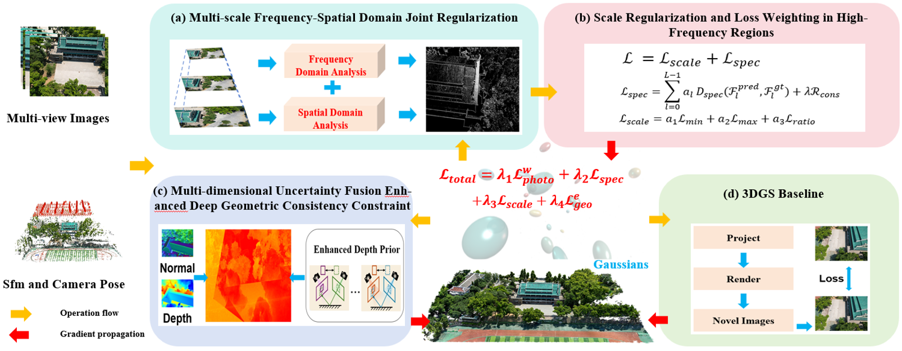
Haowen Zhang · International Journal of Applied Earth Observation and Geoinformation
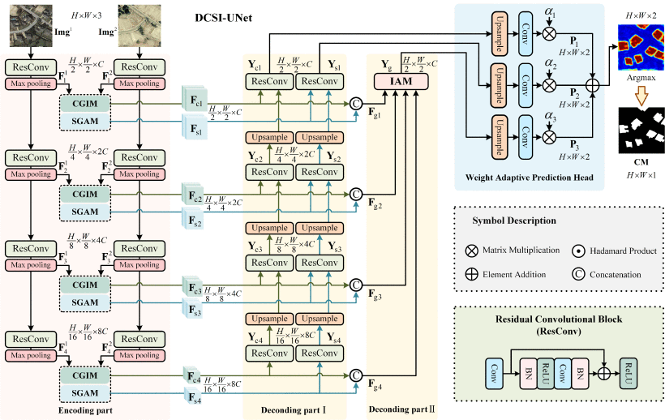
Research project
CFM / DAgger / MAPPO · Three-UAV physical validation
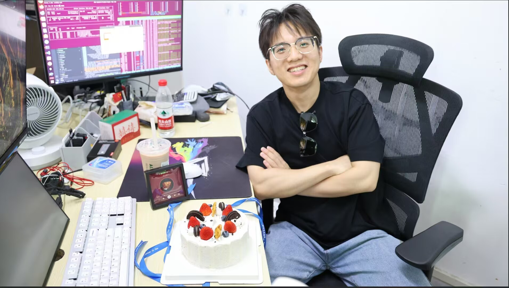
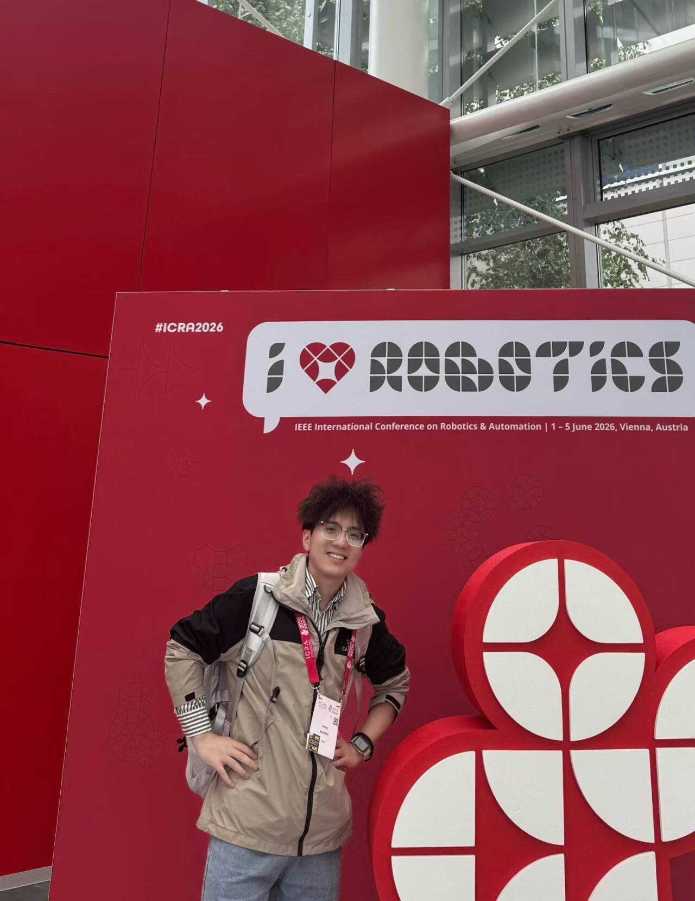
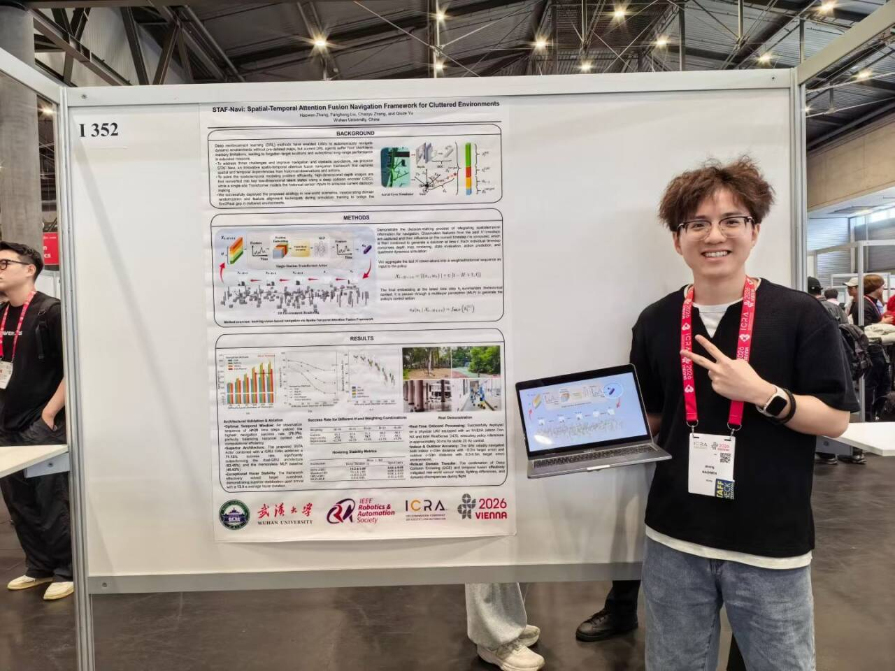
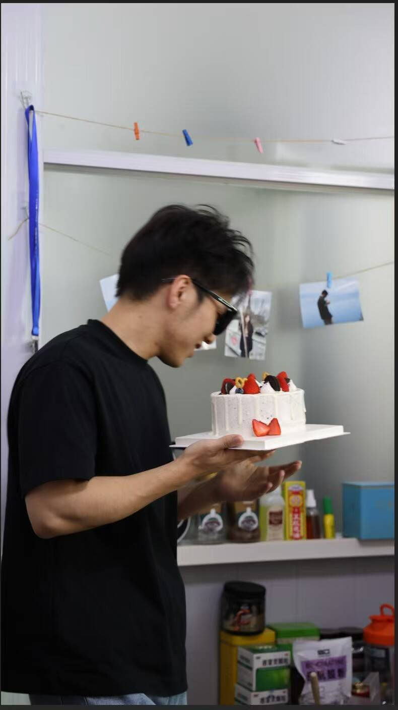

Inventor · CN 119959980 B
Certificate ↗
Inventor · CN 115941046 B
Certificate ↗
Inventor · CN 119942193 B
Certificate ↗
Inventor · CN 119559495 B
Certificate ↗Redacted display copies. Address, QR code and barcode are removed.
Industry recognition · Huawei
Recognition received during my work at Huawei.
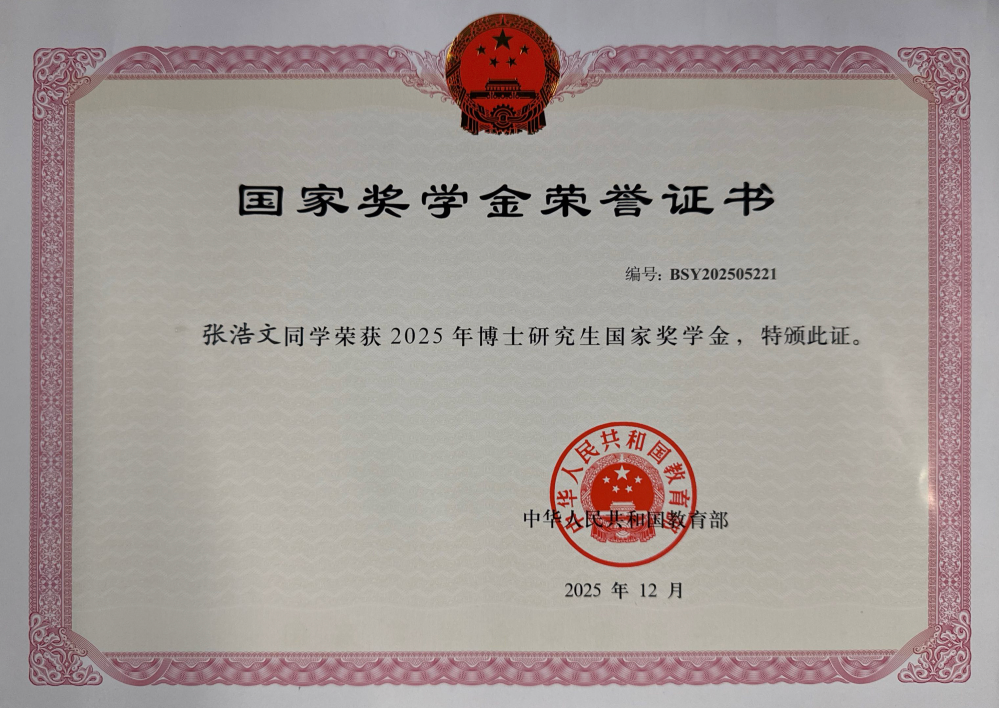
Ministry of Education, China · December 2025
View full-size certificate ↗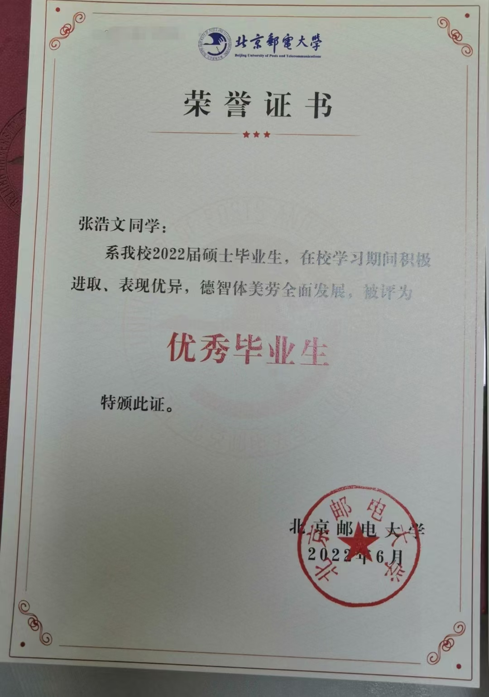
Beijing University of Posts and Telecommunications · June 2022
View full-size certificate ↗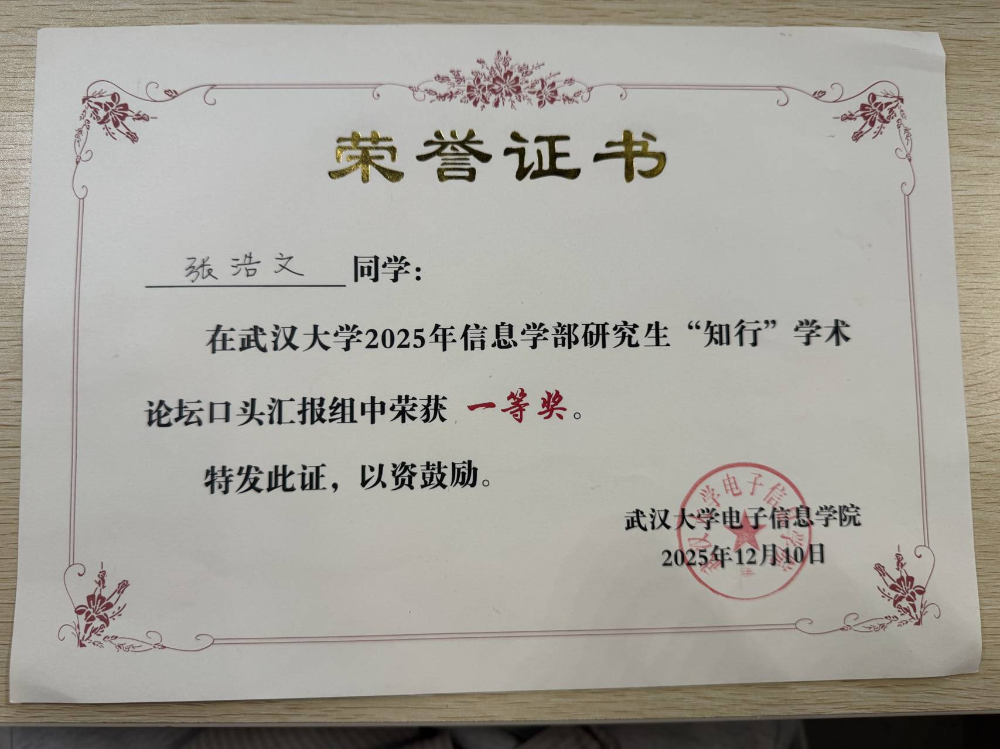
Oral presentation group · Wuhan University
View full-size certificate ↗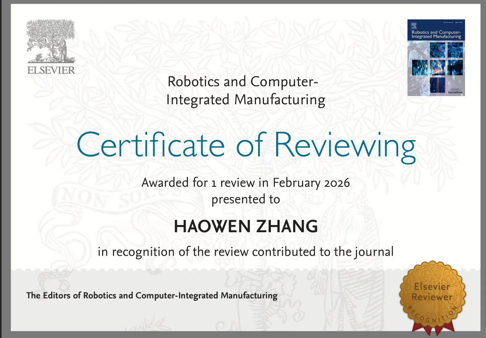
Robotics and Computer-Integrated Manufacturing · One review in February 2026
View full-size certificate ↗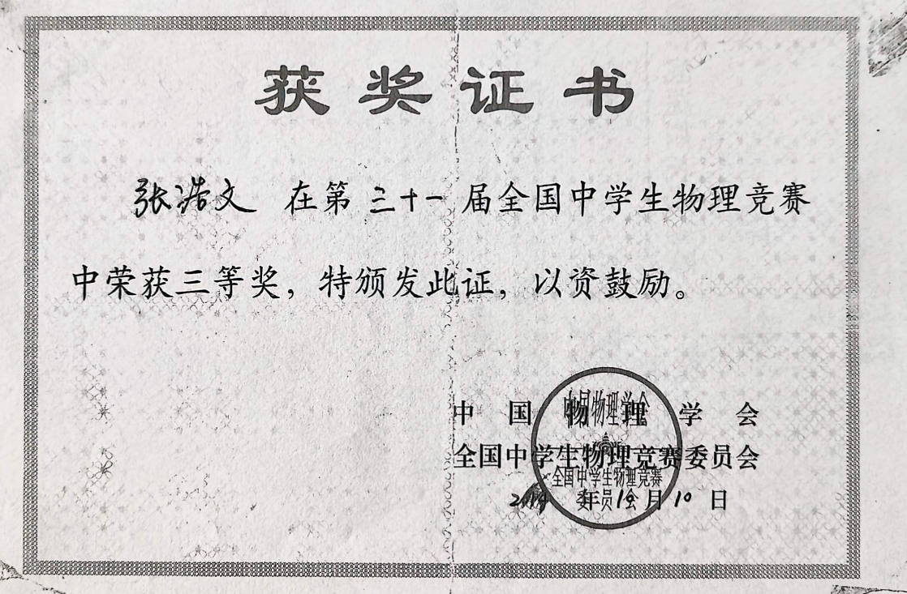
Chinese Physical Society · National competition committee
View full-size certificate ↗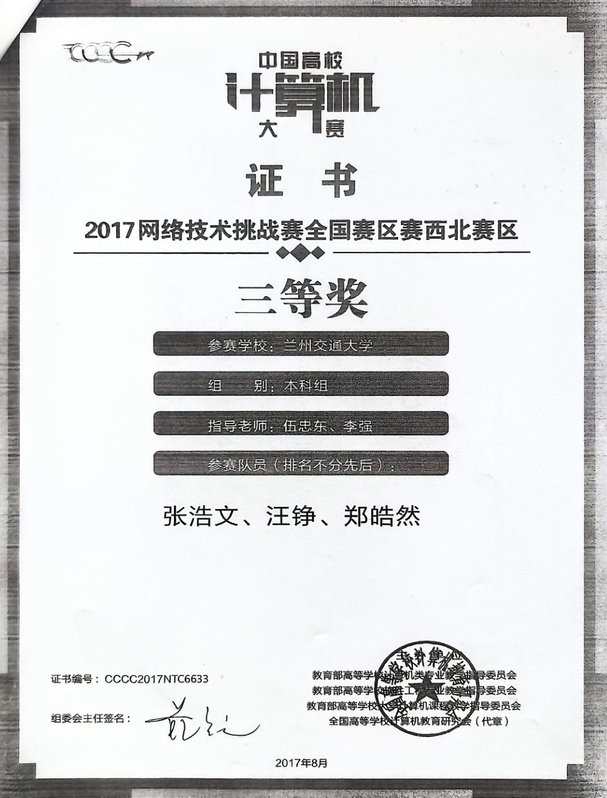
Northwest Division · August 2017
View full-size certificate ↗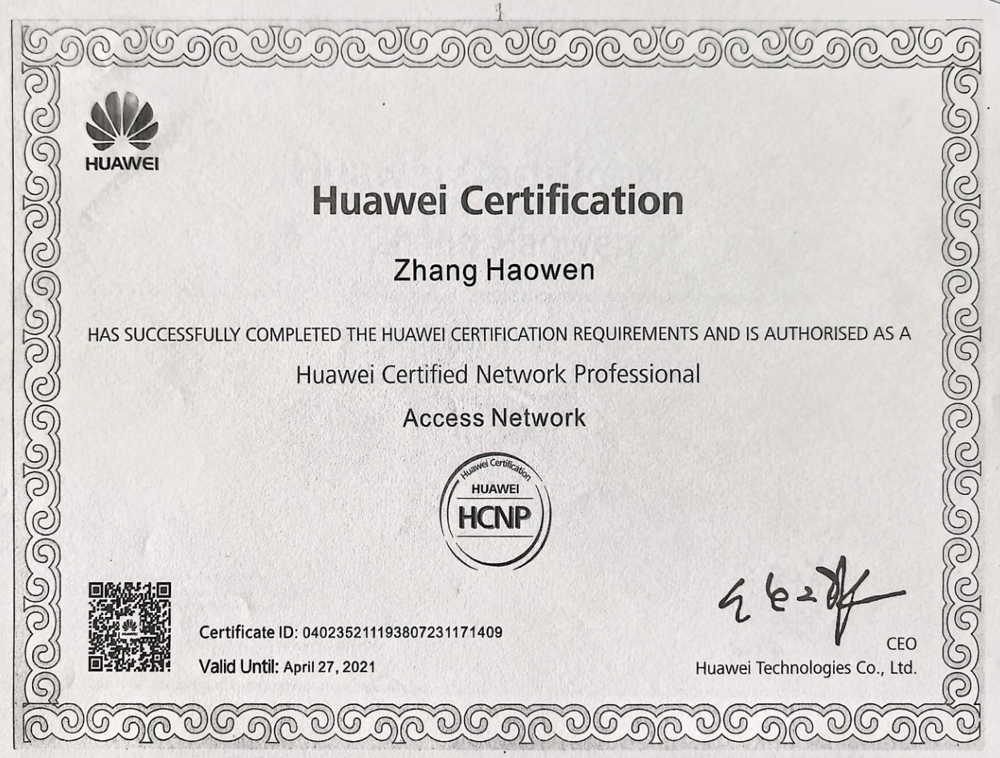
Historic certification · Valid until April 27, 2021
View full-size certificate ↗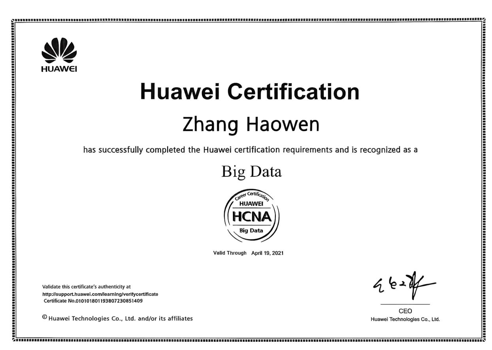
Historic certification · Valid through April 19, 2021
View full-size certificate ↗